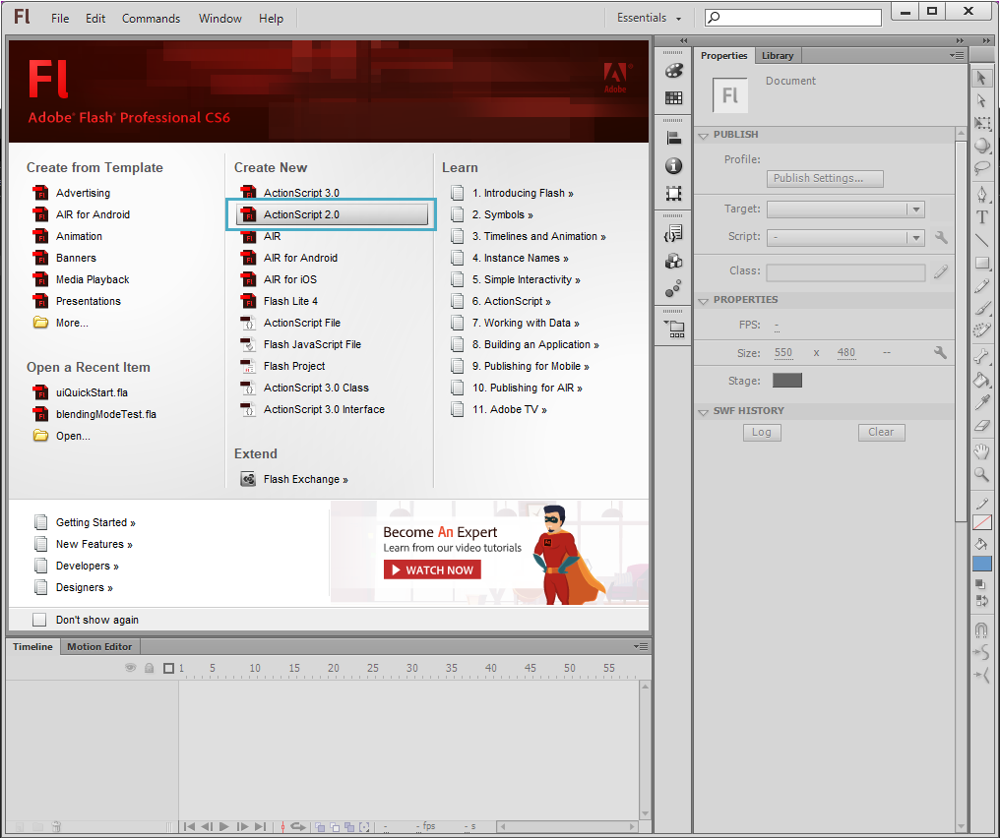
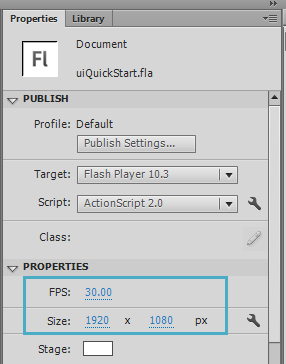
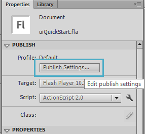
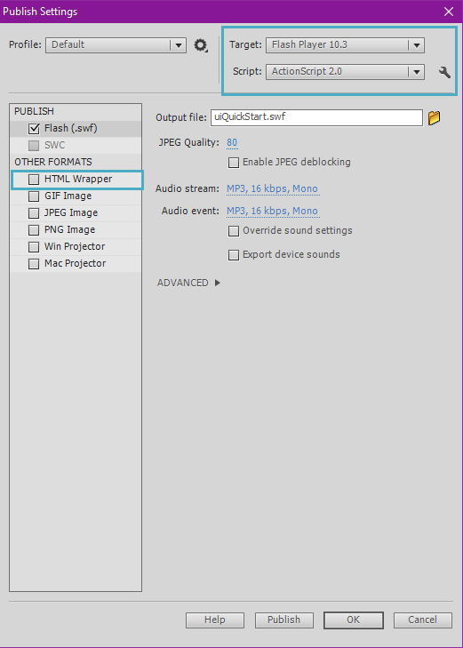
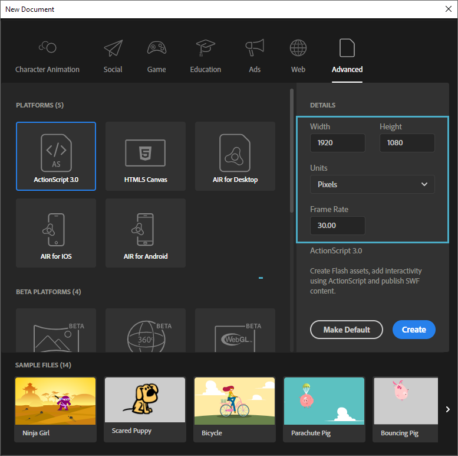
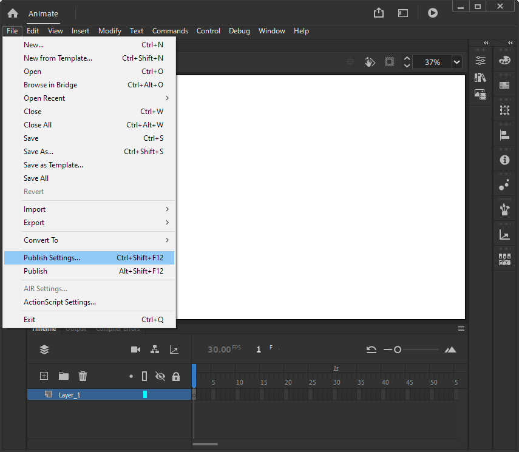
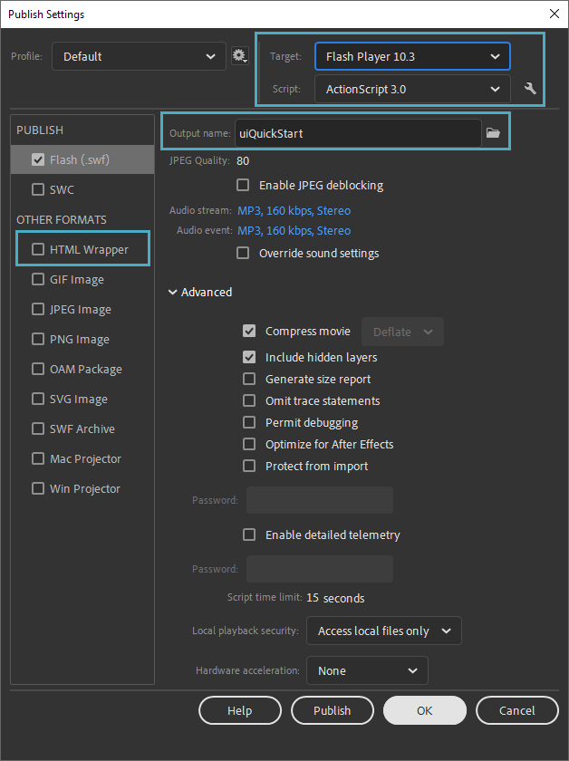

User Interface Introduction
One of the most important aspects of any game is the user interface, no matter the size or platform. In most cases the first thing a user is presented with is the user interface, so it must be taken seriously as an entry point for onboarding and general guidance in your game design. This chapter will simply cover the basic import and execution procedure of rendering a Flash UI (SWF) over your game when you enter Game mode in the Editor.
The first thing to do is to start Flash/Animate, which will bring up a welcome screen.
Steps for Flash File Creation
Scaleform 3
Select the Actionscript 2.0 template under the Create New column.

Actionscript 2.0 templateChange the resolution of the project to 1920x1080 which allows us to conform to most 16:9 standard setups, and also set the FPS to 30.

Change FPS and SizeChange the Publish Settings to Flash Player 10 and Actionscript 2.0 if you haven't already done so, and also disable HTML.

Open the Publish Settings window
Set Publish Settings to Flash Player 10 and ActionScript 2.0. Disable HTML Wrapper
Scaleform 4
Select the ActionScript 3.0 template under the Advanced tab and set the Width, Height and FPS to 1920, 1080 and 30 respectively.

Advanced tabUnder File, click Publish Settings or alternatively press CTRL+SHIFT+F12.

Publish SettingsSet the Target dropdown to Flash Player 10.3, the Output name field to "uiQuickStart", and uncheck the HTML Wrapper publish format option.

Set Target to Flash Player 10.3 and Output name to uiQuickStart. Uncheck HTML Wrapper